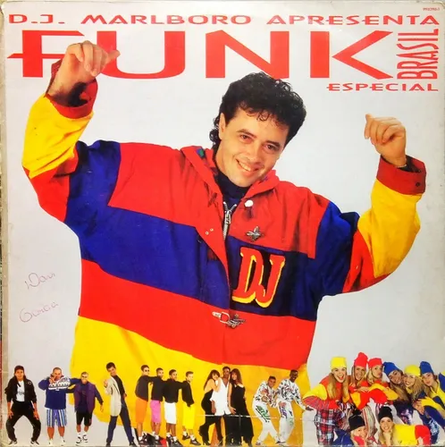

Como surgiu o funk
O funk surgiu nos Estados Unidos na década de 1960, como uma derivação da soul music e do rhythm and blues, com influências do jazz e do rock. No Brasil, o funk chegou na década de 1970, principalmente no Rio de Janeiro, e evoluiu de forma distinta, ganhando características próprias e se tornando um fenômeno cultural, especialmente nas favelas cariocas.
O Desenvolvimento do Funk
A partir da década de 80, o funk brasileiro começou a ganhar identidade própria com a introdução da bateria eletrônica por DJ Marlboro e letras que retratavam a vida nas favelas.
A Popularização do Funk

O funk se tornou um fenômeno de massa no Brasil, com artistas como Claudinho e Buchecha, Cidinho e Doca, e Anitta, que ajudaram a popularizar o gênero em diferentes vertentes
Sua Importância na Cultura
O funk se tornou um importante elemento da cultura brasileira, especialmente para a juventude das periferias, e também tem sido alvo de críticas e preconceitos.